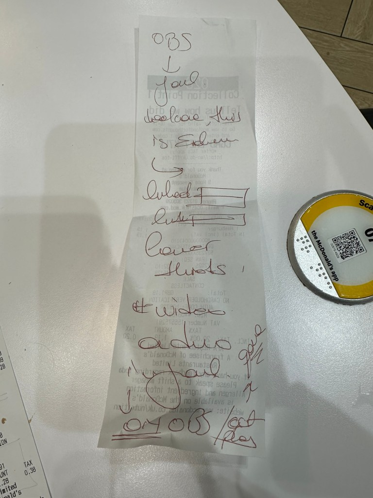
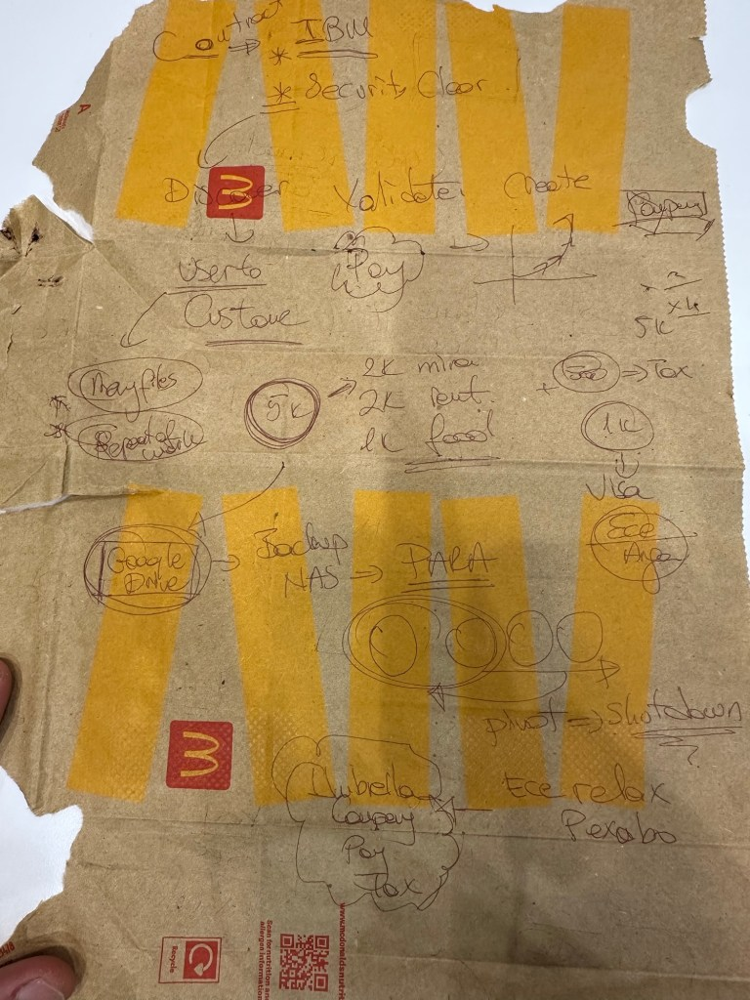
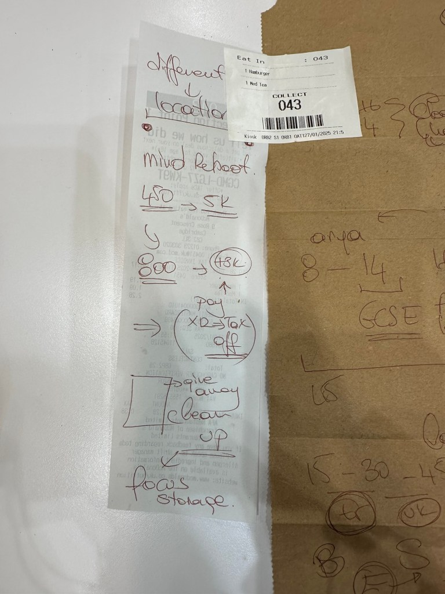
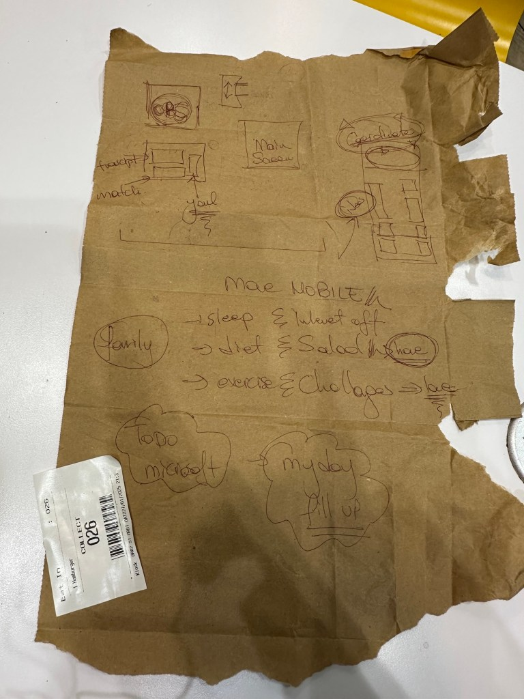
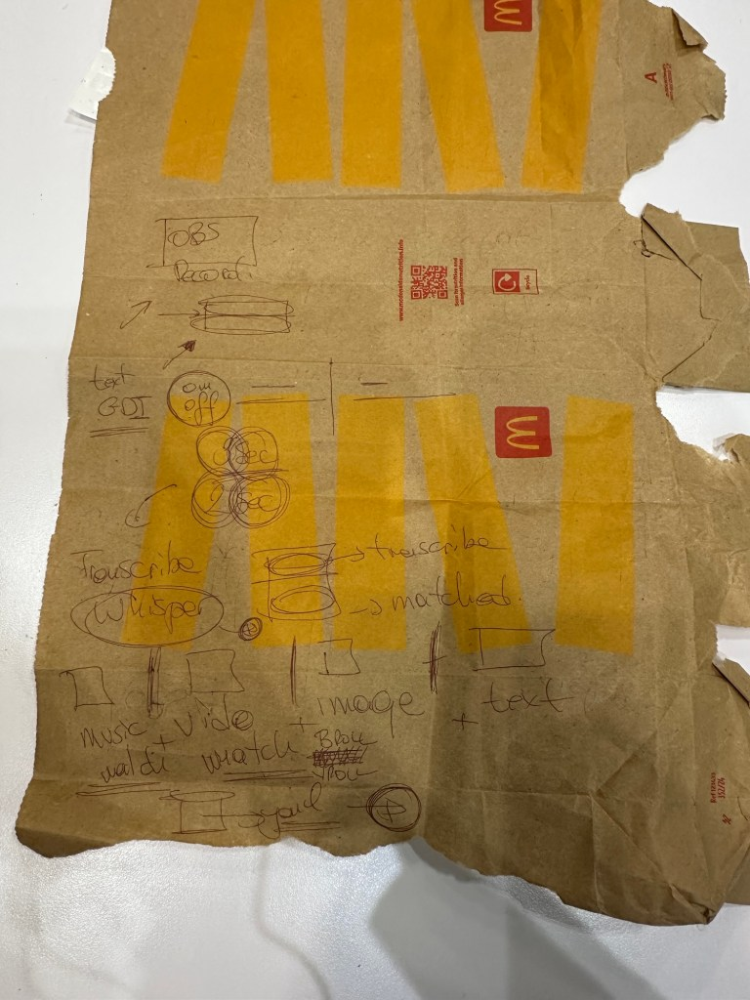
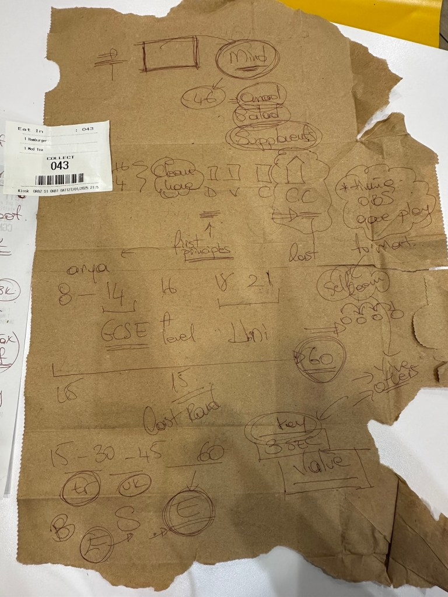
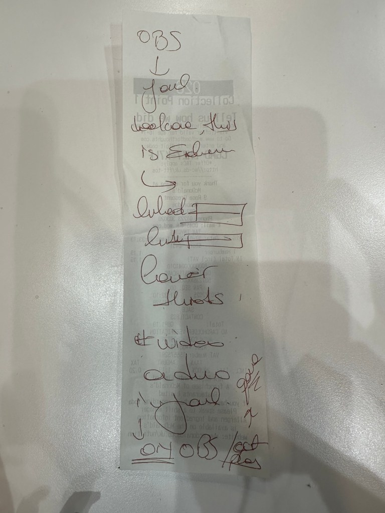

Automating Video Editing with YAML, Whisper, and Confidence Monitors 🎥🤖







In the world of content creation, efficiency is key. Whether you're a YouTuber, a filmmaker, or a corporate video producer, automating repetitive tasks can save you hours of work. In this blog post, we'll explore how to automate video editing by leveraging YAML for configuration, Whisper for audio transcription, and a confidence monitor to display key artifacts triggered by audio cues. Let’s dive in! 🚀
The Problem: Manual Video Editing is Time-Consuming ⏳
Video editing often involves:
-
Identifying key moments in audio (e.g., specific phrases or keywords).
-
Inserting corresponding visuals, text, or effects at those moments.
-
Ensuring everything is synchronized perfectly.
Doing this manually is tedious and error-prone. But what if we could automate this process? 🤔
The Solution: Automate with YAML, Whisper, and Triggers 🛠️
Here’s how we can automate video editing:
- Record Key Values in YAML 📝
Use a YAML file to define the key moments in your video. For example:
triggers: - phrase: "Let's talk about AI" artifact: "ai_image.png" start_time: 0:10 - phrase: "Here’s the graph" artifact: "graph.png" start_time: 1:30
This YAML file acts as a blueprint for your video, specifying what visuals to display when certain phrases are detected.
-
Transcribe Audio with Whisper 🎤
Use OpenAI’s Whisper model to transcribe the audio from your video. Whisper is highly accurate and can detect specific phrases or keywords in real-time. -
Trigger Artifacts with Audio Cues 🎯
As Whisper transcribes the audio, it matches the detected phrases with the triggers defined in your YAML file. When a match is found, the corresponding artifact (e.g., an image, text, or video clip) is displayed on a confidence monitor. -
Display Artifacts on a Confidence Monitor 🖥️
A confidence monitor is a screen that displays the triggered artifacts in real-time. This ensures that the visuals are perfectly synchronized with the audio.
How It Works: Step-by-Step 🛠️
Step 1: Set Up Your Environment
- Install Python and required libraries:
pip install openai-whisper pyyaml opencv-python
- Download and configure FFmpeg for Whisper.
Step 2: Create Your YAML Configuration
Define your triggers and artifacts in a YAML file (e.g., config.yaml):triggers: - phrase: "Welcome to the show" artifact: "welcome_image.png" start_time: 0:05 - phrase: "Let’s dive into the data" artifact: "data_graph.png" start_time: 1:15
Step 3: Transcribe Audio and Detect Triggers
Write a Python script to:
-
Load the YAML configuration.
-
Transcribe the audio using Whisper.
-
Match detected phrases with the triggers in the YAML file.
import whisper import yaml import cv2 # Load YAML config with open("config.yaml", "r") as file: config = yaml.safe_load(file) # Load Whisper model model = whisper.load_model("base") # Transcribe audio audio_file = "your_audio.wav" result = model.transcribe(audio_file) # Process transcription for segment in result["segments"]: text = segment["text"] start_time = segment["start"] for trigger in config["triggers"]: if trigger["phrase"].lower() in text.lower(): print(f"Trigger detected: {trigger['phrase']} at {start_time}") # Display artifact on confidence monitor artifact = cv2.imread(trigger["artifact"]) cv2.imshow("Confidence Monitor", artifact) cv2.waitKey(3000) # Display for 3 seconds
Step 4: Display Artifacts on a Confidence Monitor
Use OpenCV to display the triggered artifacts on a screen. This acts as your confidence monitor, ensuring the visuals are synced with the audio.
Benefits of This Approach 🌟
-
Save Time ⏰: Automate repetitive tasks and focus on creativity.
-
Improve Accuracy 🎯: Whisper ensures precise transcription and trigger detection.
-
Enhance Production Quality 🎬: Confidence monitors make it easy to visualize and sync artifacts.
Future Enhancements 🚀
-
Real-Time Processing: Integrate with live video feeds for real-time automation.
-
Advanced Triggers: Use AI to detect emotions, tone, or context in the audio.
-
Dynamic Artifacts: Generate visuals on-the-fly using AI tools like DALL·E or Stable Diffusion.
Conclusion 🎉
Automating video editing with YAML, Whisper, and confidence monitors is a game-changer for content creators. By leveraging these tools, you can streamline your workflow, reduce errors, and produce high-quality videos with ease. So why not give it a try? Your future self will thank you! 🙌
Let me know if you’d like a detailed tutorial or help implementing this system! 😊
Imported from rifaterdemsahin.com · 2025